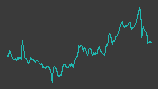

エスユーエス（6554）
東証グロース／レポート更新 2026-10-09
IR情報 ↗株探 ↗

画像判定※・6か月・基準日 2026-10-09一行でいうと：京都本社のエンジニア派遣・請負会社（在籍エンジニア約2,300人）。四半期の営業利益は直近2四半期とも前年同期を上回っており、通期計画は据え置かれたまま3Q累計で計画の大半に達している。ただし売買代金が小さく（20日平均で約13百万円※）、台帳の流動性ゲート（30百万円）に届いていない。
週次アップデート最新 2026-W41・全 3 件
新しい週を上に置いている。過去の記述は書き換えず、そのまま残している。
2026-W41（2026-10-05 週）
材料は無く、薄商いのなかで株価はやや下げた。
- 株価: 週間 -3.1%（1099→1065円・採用終値ベース、照合成立 5日、週内 1063〜1093円）
- 出来高: 前週比 -41.2%（今週 74,400株／前週 126,600株）※／信用倍率: 算出不可（RATIO_NA）・買残 271.5千株（10/02時点）※
- 判定: 「流動性低」／開示: なし
（解釈）今週のニュース見出し・開示は無い。出来高は前週比 −41.2%。 値動きの情報量は小さいと読める。判定は「流動性低」。
次週に見ること: ① 11/13 予定の決算発表
2026-W40（2026-09-28 週）
個別の開示・ニュースなし。週中に大きく下げた。
- 株価: 週間 -6.2%（1171→1099円・採用終値ベース、照合成立 5日、週内 1081〜1152円）
- 出来高: 前週比 +110.3%（今週 126,600株／前週 60,200株）※／信用倍率: 算出不可（RATIO_NA）・買残 268.3千株（09/25時点）※
- 判定: 「流動性低」／開示: なし
（解釈）直近7日の開示・ニュースは見出し一覧に無い。checks.py は 9/29 の下落（-6.2%・4.3σ）を外れ値として WARN にしている。 材料が確認できない中での下落で、9月末の権利・需給要因の可能性があるが、原因は確認できていない。
次週に見ること: ① 下落後の戻りの有無 ② 適時開示の有無
2026-W39（2026-09-21 週）
初回登録の週。株価は2日間の立会いで上昇し、終値は約7か月ぶりの水準になった。
- 楽天証券のスクリーニング「成長株0830（per）」の通過銘柄として台帳に登録した（2026-09-27、
data/master.yamlの watch_reason） - 株価：前週末 1,140円✓ → 9/24 1,153円✓ → 9/25 1,171円✓（週間 +2.7%）。9/21〜9/23 は祝日で立会いなし。1,171円は 2026-02-06（1,181円✓）以来の高い終値。9/25 の出来高 40,200株※は 8/14（44,000株※）以来の多さ（
data/prices/daily.csv） - 同じ週の TOPIX は 4,091.14 → 4,128.59✓（+0.9%）、グロース250 は 808.98 → 800.55※（−1.0%）で、グロース市場全体とは逆向きに動いた（
data/indices/） - 上昇の理由は特定できていない。9月末が期末配当の基準日（年50円予想・前期45円。決算短信 https://contents.xj-storage.jp/xcontents/AS97535/1258ecc5/492f/434f/8529/cb2e51fe7b3d/140120260812518017.pdf 、2026-09-27 取得）で、Yahoo!ファイナンスの同銘柄ニュース欄に 9/15・9/22 付で「9月の高利回り配当」特集が並んでいた（https://finance.yahoo.co.jp/quote/6554.T/news 、2026-09-27 取得）ことから、配当取りの買いが入った可能性がある（解釈・未確認）
- 今週、会社からの適時開示は見当たらない（企業IRの開示一覧 https://www.sus-g.co.jp/business/ir/ir-news/ 、2026-09-27 取得。最新は 2026-08-12 の3Q決算短信）
次週に見ること：①権利付最終日（9/28 と読める）通過後の値動き。配当落ちで下げた分を戻すか ②11月予定の通期決算（IR カレンダー https://www.sus-g.co.jp/ir/ 、2026-09-27 取得）までに業績予想の修正が出るか
次期売上・利益推定対象 FY2026-09・作成済み・変数 4 個
作成済み 対象期 FY2026-09・起案 2026-09-27。検証済みデータと明示した仮定から機械計算した概算であり、会社計画でも的中予想でもない。推定 の付いた変数を疑うための頁。
会社計画・市場予想・実績との比較（百万円）
| 指標 | 前期実績 | 会社計画 | 市場予想 | 当台帳推定 | 市場予想比 |
|---|---|---|---|---|---|
| 売上 | 15,015 | 16,902 | — | 16,376 | — |
| 営業利益 | 1,212 | 1,365 | — | 1,441 | — |
市場予想: 未取得。みんかぶの証券アナリスト予想ページ（https://minkabu.jp/stock/6554/analyst_consensus）を 2026-09-27 に取得しようとしたが HTTP 403 で読めず、コンセンサスの有無そのものを確認できていない。比較対象は会社計画のみ
計算の分解
| セグメント | 式（値を代入） | 売上（百万円） |
|---|---|---|
| 1〜3Q実績（2025年10月〜2026年6月・確定分） | 12,094 = 12,094 | 12,094 |
| 4Q（2026年7〜9月・前年同期の売上×伸び） | 3,928 × 1.09 = 4,281.52 | 4,282 |
変数と根拠
カードを押すと、その値の置き方（メモ・出典）が開く。推定 の変数から疑うこと。
1〜3Q実績（2025年10月〜2026年6月・確定分）ytd_revenue12094実績
data/fundamentals/6554.csv4Q（2026年7〜9月・前年同期の売上×伸び）prev_q43928実績
data/fundamentals/6554.csv4Q（2026年7〜9月・前年同期の売上×伸び）growth1.09推定
全社op_margin0.088推定
感度 — この推定を最も動かす変数
各変数を +10% したときの営業利益の変化。上にある変数ほど、根拠を厚く確かめる価値がある。ただし op_margin だけは別扱い——営業利益 = 売上合計 × op_margin なので +10% は定義上つねに +10% になり、売上側の変数と大小を比べても意味が無い。
| 変数 | セグメント | 営業利益への影響 |
|---|---|---|
op_margin | 全社 定義上 | +10.0% 乗法モデルなので定義上つねに +10%。売上側の変数との大小比較には意味が無い（率の水準そのものを疑うこと） |
ytd_revenue | 1〜3Q実績（2025年10月〜2026年6月・確定分） | +7.4% |
growth | 4Q（2026年7〜9月・前年同期の売上×伸び） | +2.6% |
prev_q4 | 4Q（2026年7〜9月・前年同期の売上×伸び） | +2.6% |
推定の変遷
過去の版は書き換えずに残す。数値感がどう変わってきたかが学習の履歴になる。
| 起案日 | 対象期 | 売上 | 営業利益 | 何を変えたか |
|---|---|---|---|---|
| 2026-09-27 | FY2026-09 | 16,376 | 1,441 | 初版（Claude 起案・人間未確認）。9月決算で3Qまで実績が出ているため、1〜3Q実績（確定分）＋4Q（前年同期×伸び）の2区分。 対象期は 2026-09-30 で終わり、残るのは4Qの答え合わせだけ。本業はエンジニア派遣・業務受託（ソリューション事業）で、 本来は在籍エンジニア数×稼働率×月額単価で組むべきだが、直近の在籍数・単価を一次情報で確認できず（決算短信 PDF は kabutan・TDnet とも 2026-09-27 に HTTP 403）、変数を増やさなかった。会社計画は売上高 16,902・営業利益 1,365 百万円 （fundamentals の採用値。前期比 +12.6%・+12.6%）。推定は売上が計画を下回り、営業利益は計画を上回る |
会社概要この会社は何者か・財務の推移と健全性・今後の展望とリスク・値動きと市場の評価・出典・検証の記録
この会社は何者か
京都市下京区に本社を置く、技術者派遣・請負とITコンサルティングの会社。2000年1月設立、2017年9月に上場し、現在は東証グロース。9月決算。代表取締役社長の齋藤公男氏が議決権の50.83%を持つ支配株主である（2025-09-30 現在）。
売上の9割超は「ソリューション事業」で、次の3つからなる（3Q累計の決算短信による）。
- エンジニア派遣：IT・製造業の顧客にエンジニアを派遣する。売上は「在籍エンジニア数×稼働率×派遣単価」で決まる。2026年6月末の在籍エンジニアは2,302人、3Q累計の稼働率は93.9%、派遣単価は前年同期比 +4.2%。2026年4月に新卒エンジニア265人が入社した
- IT請負：東日本を中心に受注が拡大し、案件利益率も上がったと会社は説明している
- 製造請負：半導体関連の顧客向けが伸びた
ほかに、SAP 導入などの「コンサルティング事業」（HRコンサルティングは2025年12月末に他社へ譲渡済み）、産業向けシミュレーターやAIを使うシステム開発の「AR/VR事業」、特例子会社による就労支援と再生医療支援の「その他」がある。3Q累計ではソリューション事業以外の3区分はいずれも減益か赤字で、利益はほぼソリューション事業から出ている。
出所: data/fundamentals/6554.csv の採用値（別サイト2つ以上が一致した値だけ）。10/10点を採用。
出典は「## 出典」節の一次情報 1〜4。
財務の推移と健全性
凡例は出典節の先頭。表のセルには記号を付けない。以下の表の数値はすべて data/fundamentals/6554.csv の採用値（2ソース照合済み）。
損益（百万円）:
| 項目 | 2022/9期（百万円） | 2023/9期（百万円） | 2024/9期（百万円） | 2025/9期（百万円） | 2026/9期 会社計画（百万円） |
|---|---|---|---|---|---|
| 売上高 | 10,465 | 11,501 | 13,219 | 15,015 | 16,902 |
| 営業利益 | 731 | 608 | 829 | 1,212 | 1,365 |
| 経常利益 | 806 | 623 | 860 | 1,258 | 1,397 |
| 純利益 | 316 | 461 | 602 | 915 | 991 |
キャッシュフローと残高（百万円）:
| 項目 | 2023/9期（百万円） | 2024/9期（百万円） | 2025/9期（百万円） |
|---|---|---|---|
| 営業キャッシュフロー | 445 | 745 | 1,062 |
| フリーキャッシュフロー | 98 | 521 | 769 |
| 現金同等物 | 2,615 | 2,812 | 3,407 |
| 総資産 | 5,008 | 5,650 | 6,715 |
四半期単独（前年同期比は営業利益の伸び。Claude が採用値から計算）:
| 期 | 売上高（百万円） | 営業利益（百万円） | 前年同期比 |
|---|---|---|---|
| Q2025-10_2025-12 | 3,924 | 341 | −10.0% |
| Q2026-01_2026-03 | 4,110 | 530 | +21.0% |
| Q2026-04_2026-06 | 4,060 | 287 | +84.0% |
出所: data/fundamentals/6554.csv の採用値（別サイト2つ以上が一致した値だけ）。8/8点を採用。
- 利益の勢い：通期の営業利益は2025年9月期に 1,212百万円✓（前期比 +46.2%）。四半期では 10〜12月期に前年同期を下回った（341百万円✓、−10.0%）あと、1〜3月期 +21.0%、4〜6月期 +84.0% と2四半期続けて増益（
python src/screen.py 6554の出力。警告なし）。4〜6月期の伸びが大きいのは、前年同期が 156百万円✓ と低かった反動も含む - 3Q累計：売上高 12,094百万円・営業利益 1,158百万円（いずれも四半期単独の採用値3本の合計✓）。前年同期比は売上高 +9.1%、営業利益 +19.0%。純利益は 903百万円※（+33.9%）で、HRコンサルティング事業の譲渡益 70百万円（特別利益）を含む（決算短信）
- 通期計画に対する位置：営業利益の計画 1,365百万円✓ に対し3Q累計で 1,158百万円✓。残る4Q（7〜9月）に計画が求める営業利益は約207百万円で、前年の同じ四半期（239百万円✓）を下回る水準。会社は2026年4月の中間期予想の上方修正の際、3Q以降に新卒研修・エンジニアの報酬引き上げ・後ずれした販管費の執行を見込むとして通期予想を据え置いた（出典の一次情報 3）。計画が保守的なのか、4Qに費用が集中するのかは、11月の決算まで分からない
- 健全性：2025年9月期末の自己資本比率は 62.9%✓、2026年6月末は 59.9%※（決算短信でも 59.9%）。6月末の現金及び預金は 4,330百万円（決算短信）で、借入金は貸借対照表に計上されていない。6月末に未払費用が大きく増え賞与引当金が消えているのは、賞与の計上科目の期中の置き換えと読める（解釈）
- 資本効率：2025年9月期の ROE は 23.48%（株探）と 21.65%（IR BANK）で2ソースが食い違っている※。20%台前半とまでは言えるが、値は確定させない
- 配当：2025年9月期 45円、2026年9月期予想 50円（期末一括。決算短信）
今後の展望とリスク
展望（会社の説明と、そこから読めること）
- エンジニア不足が常態化しているとして、会社は派遣需要の継続を見込んでいる。在籍エンジニア数の拡大と派遣単価の上昇（+4.2%）が同時に進んでおり、売上の伸びはこの2つで説明できる
- 生成AIツールの全エンジニアへの導入や上流案件への参画を「高付加価値化」と位置づけ、単価の引き上げにつなげる方針（決算短信）
- 採用値の売上高は2017年9月期から2025年9月期まで毎期増えており、通期計画が達成されればその流れが続く
リスク
- 流動性：20日平均の売買代金は約13百万円※（出来高は未照合）で、台帳の流動性ゲート（30百万円）を下回っている。支配株主が議決権の過半を持ち、市場に出回る株が少ないことも一因と読める（解釈）。判定は「流動性低」で止まる可能性が高い
- 稼働率：新卒を大量に採ると、配属までの研修期間は稼働率が下がる。3Q累計の全体稼働率は前年同期を下回った（決算短信）。来春の新卒採用数と稼働率の推移が、派遣型ビジネスの利益率を左右する
- 人件費：エンジニアの報酬引き上げを会社自身が4Q以降の費用増要因に挙げている。派遣単価の上昇が報酬の上昇を上回り続けられるかが利益率の分かれ目
- 周辺事業：コンサルティング事業は3Q累計で売上高 −33.6%、AR/VR事業とその他は赤字（決算短信）。規模は小さいが、全社の利益を削っている
- 信用買残：信用買残は 274.6千株※（2026-09-18 時点、売残 0）で、1日あたり出来高（20日平均 約12,000株※）の20倍を超える。買い手の手じまいが出ると値が崩れやすい構造と読める（解釈）
未確認・推測
- 会社計画（4Q営業利益 約207百万円）が保守的かどうかは推測の域を出ない（
assumed: true。根拠は前年4Qの 239百万円✓ と3Qまでの増益基調） - アナリスト予想（コンセンサス）の有無は確認できていない（みんかぶの該当ページが HTTP 403）
値動きと市場の評価
出所: data/prices/daily.csv の採用終値（2つの取得元が一致した終値だけ）。ザラ場の高値・安値は照合を通っていないので使っていない。3/3点を採用、52週の採用終値 241営業日。安値 2026-06-04 / 高値 2025-10-24 / 現在 2026-10-09。
- 採用終値の52週高値は 1,244円✓（2025-10-24）、安値は 946円✓（2026-06-04）。2026年2月から6月にかけて1,000円前後まで下げ、7月以降は戻して 9/25 に 1,171円✓（
data/prices/daily.csv） - 出来高が膨らんだのは決算・開示の前後に集中している：2025-11-17・18（通期決算の翌営業日以降、100,300株※・114,800株※）、2026-02-12〜16（1Q決算前後）、2026-04-23（中間期の業績予想上方修正の翌日、78,600株※）、2026-08-14（3Q決算の2営業日後、44,000株※）。それ以外の日は1万株前後
- 2025-08-15〜2025-09-26 の株価は主ソースのみで照合が成立していない（
SINGLE_SOURCE）ため、上の数値に含めていない - 株予報の 9/25 時点の指標は、予想PER 10.6倍※・実績PBR 2.22倍※・予想配当利回り 4.27%※・時価総額 106億円※（二次情報。出典節の二次情報 1）
出典
凡例: ✓=2ソース照合済みの採用値 ／ ※=未照合・参考値 ／ †=決算短信（一次情報）から直接
一次情報（いずれも 2026-09-27 取得）
| # | 資料 | URL |
|---|---|---|
| 1 | 2026年9月期 第3四半期決算短信（2026-08-12） | https://contents.xj-storage.jp/xcontents/AS97535/1258ecc5/492f/434f/8529/cb2e51fe7b3d/140120260812518017.pdf |
| 2 | 支配株主等に関する事項について（2025-11-20） | https://contents.xj-storage.jp/xcontents/AS97535/c0782f4d/3659/4f61/9545/b35b5ec435be/140120251120506581.pdf |
| 3 | 2026年9月期第2四半期（中間期）連結業績予想の修正に関するお知らせ（2026-04-22） | https://contents.xj-storage.jp/xcontents/AS97535/06624d78/b416/4770/8b4f/4a740607685f/140120260421507306.pdf |
| 4 | HRコンサルティング事業の譲渡に関するプレスリリース（2025-09-30。譲渡実行日 2025-12-31） | https://prtimes.jp/main/html/rd/p/000000077.000106092.html |
| 5 | 企業IR（開示一覧・IR カレンダー） | https://www.sus-g.co.jp/business/ir/ir-news/ ／ https://www.sus-g.co.jp/ir/ |
| 6 | 台帳のデータ | data/fundamentals/6554.csv ／ data/prices/daily.csv ／ data/margin/6554.csv ／ data/indices/ |
二次情報（いずれも 2026-09-27 取得）
| # | 資料 | URL |
|---|---|---|
| 1 | 株予報Pro（指標・3Q決算の要約） | https://kabuyoho.jp/report?bcode=6554 |
| 2 | Yahoo!ファイナンス（企業情報・ニュース見出し） | https://finance.yahoo.co.jp/quote/6554.T/profile ／ https://finance.yahoo.co.jp/quote/6554.T/news |
| 3 | 株探（財務の取得元） | https://kabutan.jp/stock/finance?code=6554 |
| 4 | IR BANK（財務の照合先） | https://irbank.net/E33357/results |
未確認
- 決算説明資料（3Qは作成なし）による在籍エンジニア数・単価の四半期推移
- 通期決算の正確な発表日（IR カレンダーは「11月」までしか示していない）
- アナリスト予想の有無（みんかぶ https://minkabu.jp/stock/6554/analyst_consensus が HTTP 403）
- 9/24〜25 の上昇理由（配当取りは推測）
記述の裏取り
本文の記述を、書いたのとは別の文脈が出典URLを取り直して1件ずつ判定した結果（読み方）。
検証日 2026-09-27検証した記述 37裏付けあり 24この出典では確かめられない（別の出典が要る） 3確かめられない（到達不可・出典なし） 10再取得した出典 11
裏が取れなかった記述
出典を取り直しても確かめられなかったもの。本文に残っているが、確認済みとして読んではいけない。
| 判定 | 本文の記述 | 再取得して分かったこと | 出典 | どうするか |
|---|---|---|---|---|
| この出典では確かめられない（別の出典が要る） | グロース250 は 808.98 → 800.55※（−1.0%） | growth250.csv: 2026-09-18・2026-09-25 とも status=SINGLE_SOURCE・close 空（value_primary は kabutan の 808.98・800.55）。SINGLE_SOURCE は採用値ではないため裏付けに使えない（D7）。本文は※で未照合と明示している。 | 検証済みデータdata/indices/growth250.csv | yahoo_jp 側の growth250 取得が成立するまで※のまま残すか、比較をTOPIXだけにする |
| この出典では確かめられない（別の出典が要る） | 最新は 2026-08-12 の3Q決算短信 | 再取得（200・1,086字）。本文はサイトのナビゲーション（IR NEWS／決算短信／適時開示情報 等のメニュー）のみで、開示の一覧・日付が1件も含まれない。「今週、適時開示は見当たらない」も同じ理由で確かめられない。 | 一次情報 出典 ↗ | 開示一覧が静的に取れる出典（TDnet 等の一覧URL）を本文に足すか、「開示一覧はJS描画で機械確認できていない」と明示する |
| 確かめられない（到達不可・出典なし） | 代表取締役社長の齋藤公男氏が議決権の50.83%を持つ支配株主である（2025-09-30 現在） | 支配株主PDFは到達（200）したがテキスト化されず、50.83% を確認できない。氏名と役職は PR TIMES（200）の「代表取締役社長：齋藤 公男」で確認。 | 一次情報 出典 ↗ 出典 ↗ | 議決権比率はテキストで読める出典（有報・コーポレートガバナンス報告書のHTML等）を足す |
| 確かめられない（到達不可・出典なし） | 2026年6月末の在籍エンジニアは2,302人、3Q累計の稼働率は93.9%、派遣単価は前年同期比 +4.2%。2026年4月に新卒エンジニア265人が入社した | 3Q決算短信PDFは到達（200）したが fetch_source.py はテキスト化しない（chars=82）。data/tanshin/6554.csv も存在しない。2,302／93.9／4.2／265 のいずれも照合できない。 | 一次情報 出典 ↗ | src/fetch_tanshin.py で data/tanshin/6554.csv を作るか、テキストで読める出典を足す |
| この出典では確かめられない（別の出典が要る） | HRコンサルティングは2025年12月末に他社へ譲渡済み | 再取得（200・2025年9月30日付）: 「2025年12月31日をもって、HRコンサルティングサービスをウェルネス・コミュニケーションズ株式会社…へ譲渡することを決議し、事業譲渡契約を締結いたしました。」予定日と契約締結は確認できるが、譲渡が実行済みであることはこの出典（実行前の発表）では確かめられない。 | 一次情報 出典 ↗ | 実行を示す出典（3Q決算短信の特別利益の記載をテキストで読める形で）を足す |
| 確かめられない（到達不可・出典なし） | 3Q累計ではソリューション事業以外の3区分はいずれも減益か赤字 | セグメント情報は決算短信PDFにしかなく、PDFがテキスト化されないため照合できない。data/tanshin/6554.csv も無い。 | 一次情報 出典 ↗ | data/tanshin/6554.csv を作るか、セグメント別の数値をテキストで読める出典を足す |
| 確かめられない（到達不可・出典なし） | 純利益は 903百万円※（+33.9%）で、HRコンサルティング事業の譲渡益 70百万円（特別利益）を含む | 決算短信PDFはテキスト化されず、譲渡益 70百万円・+33.9% を照合できない。fundamentals の net_income C2025-10_2026-06=903・C2024-10_2025-06=674 はいずれも SINGLE_SOURCE（採用値ではない）で、その比 903/674−1 = +33.98% は百万円丸めの値どうしの計算であり +33.9% とも +34.0% とも確定できない。 | 一次情報 出典 ↗ data/fundamentals/6554.csv | data/tanshin/6554.csv で3Q累計の純利益と特別利益を照合する |
| 確かめられない（到達不可・出典なし） | 3Q以降に新卒研修・エンジニアの報酬引き上げ・後ずれした販管費の執行を見込むとして通期予想を据え置いた | 業績予想修正PDFは到達（200）したがテキスト化されず、据え置きの理由の記載を照合できない。 | 一次情報 出典 ↗ | テキストで読める出典（TDnet のHTML版・企業IRのニュース本文等）を足す |
| 確かめられない（到達不可・出典なし） | 6月末の現金及び預金は 4,330百万円（決算短信）で、借入金は貸借対照表に計上されていない | 決算短信PDFはテキスト化されず、4,330百万円・借入金の有無を照合できない。fundamentals に2026年6月末の現金・借入金の行は無い（C2025-10_2026-06 は equity_ratio=59.9 等が SINGLE_SOURCE のみ）。 | 一次情報 出典 ↗ | data/tanshin/6554.csv で貸借対照表の値を照合する |
| 確かめられない（到達不可・出典なし） | コンサルティング事業は3Q累計で売上高 −33.6%、AR/VR事業とその他は赤字 | セグメント情報は決算短信PDFにのみあり、テキスト化されないため照合できない。 | 一次情報 出典 ↗ | data/tanshin/6554.csv を作るか、テキストで読める出典を足す |
| 確かめられない（到達不可・出典なし） | みんかぶの該当ページが HTTP 403 | 本 run の再取得でも http_status 403（本文27字）。本文の「403 で見られない」という自己申告とは整合するが、到達できない出典では内容を何も確かめられない。コンセンサスの有無は未確認のまま。 | 出典なし 出典 ↗ | アナリスト予想の有無を確かめるなら到達できる出典を足す（株予報の「目標株価(コ) --」は本 run で見えたが本文の出典として使われていない） |
| 確かめられない（到達不可・出典なし） | 2026-04-23（中間期の業績予想上方修正の翌日、78,600株※） | daily.csv: 2026-04-23 volume=78600（一致）。ただし修正発表日（本文は 2026-04-22）は PDF がテキスト化されず確認できない。PDF の URL 末尾は 140120260421507306 で、4/21 を示す可能性もある（未確認）。 | 一次情報data/prices/daily.csv 出典 ↗ | 発表日をテキストで確認できる出典を足す。4/21 発表なら「翌日」の記述を直す |
| 確かめられない（到達不可・出典なし） | | 1 | 2026年9月期 第3四半期決算短信（2026-08-12） | | 一次情報 1〜3 の PDF はいずれも到達（200・application/pdf）したが、fetch_source.py はテキスト化しない。data/tanshin/6554.csv が無いため、本文中の「（決算短信）」を根拠とする記述はすべて機械で照合できない。発表日 2026-08-12 は IRカレンダーで確認。 | 一次情報 出典 ↗ | src/fetch_tanshin.py で data/tanshin/6554.csv を作り、再検証する |
裏付けが取れた記述 24件
| 判定 | 本文の記述 | 再取得して分かったこと | 出典 | どうするか |
|---|---|---|---|---|
| 裏付けあり | 前週末 1,140円✓ → 9/24 1,153円✓ → 9/25 1,171円✓（週間 +2.7%） | daily.csv（status=OK）: 2026-09-18 close=1140.0、2026-09-24 close=1153.0、2026-09-25 close=1171.0。1171/1140−1 = +2.72%。一致。 | 検証済みデータdata/prices/daily.csv | — |
| 裏付けあり | 1,171円は 2026-02-06（1,181円✓）以来の高い終値 | daily.csv（OK行）: 2026-02-06 close=1181.0。2026-02-07〜2026-09-24 の OK 行に close≥1171 の日は無く、9/25 の 1171.0 が最初。一致。 | 検証済みデータdata/prices/daily.csv | — |
| 裏付けあり | 9/25 の出来高 40,200株※は 8/14（44,000株※）以来の多さ | daily.csv: 2026-09-25 volume=40200、2026-08-14 volume=44000。2026-08-15〜09-24 に volume≥40200 の日は無い。一致（出来高は2ソース照合の対象外で、本文も※で明示）。 | 検証済みデータdata/prices/daily.csv | — |
| 裏付けあり | TOPIX は 4,091.14 → 4,128.59✓（+0.9%） | topix.csv（status=OK、kabutan/yahoo_jp 一致）: 2026-09-18 close=4091.14、2026-09-25 close=4128.59。4128.59/4091.14−1 = +0.92%。一致。 | 検証済みデータdata/indices/topix.csv | — |
| 裏付けあり | 年50円予想・前期45円 | 企業IRトップ（200）: 「2025年9月期においては…配当を当初予想に10円を加えた1株当たり45円といたします。また、2026年9月期につきましては…1株当たり50円を予定しております。」本文が引く決算短信PDFはテキスト化できず未照合。 | 一次情報 出典 ↗ | — |
| 裏付けあり | 9/15・9/22 付で「9月の高利回り配当」特集が並んでいた | 再取得（200）: 「まだ間に合う、9月配当【高利回り】ベスト30「スタンダード他」編 ＜割安株特集＞ 9/22 株探ニュース」「9月に配当取りを狙える【高利回り】ベスト30「スタンダード他」編 ＜割安株特集＞ 9/15 株探ニュース」。9/5 付の同種記事もある。見出しの存在のみ確認（上昇理由との関係は本文も推測と明示）。 | 二次情報 出典 ↗ | — |
| 裏付けあり | 11月予定の通期決算 | IRカレンダー（200）: 「2026年11月 | 2026年9月期 決算発表」。日付は未記載（本文の未確認節とも整合）。 | 一次情報 出典 ↗ | — |
| 裏付けあり | 2000年1月設立、2017年9月に上場し、現在は東証グロース。9月決算 | 再取得（200）: 「設立年月日 | 2000年1月」「市場名 | 東証グロース」「上場年月日 | 2017年9月13日」「決算 | 9月末日」「本社所在地 | 〒600-8008 京都市下京区…」「代表者名 | 齋藤 公男」。 | 二次情報 出典 ↗ | — |
| 裏付けあり | | 売上高 | 10,465 | 11,501 | 13,219 | 15,015 | 16,902 | | 採用値（OK）: revenue FY2022-09=10465・FY2023-09=11501・FY2024-09=13219・FY2025-09=15015、revenue_plan FY2026-09=16902。営業利益行 731/608/829/1212/1365、経常利益行 806/623/860/1258/1397、純利益行 316/461/602/915/991 も採用値と一致。 | 検証済みデータdata/fundamentals/6554.csv | — |
| 裏付けあり | | フリーキャッシュフロー | 98 | 521 | 769 | | 採用値（OK）: free_cf FY2023-09=98・FY2024-09=521・FY2025-09=769。同表の operating_cf 445/745/1062、cash_equivalents 2615/2812/3407、total_assets 5008/5650/6715 も一致。 | 検証済みデータdata/fundamentals/6554.csv | — |
| 裏付けあり | | Q2026-04_2026-06 | 4,060 | 287 | +84.0% | | 採用値（OK）: Q2026-04_2026-06 revenue=4060・operating_income=287、Q2025-04_2025-06 operating_income=156。287/156−1 = +83.97%。他の2行も 341/379−1 = −10.03%、530/438−1 = +21.00%。python src/screen.py 6554 の出力「直近Q +84.0% その前Q +21.0%」「警告なし」と一致。 | 検証済みデータdata/fundamentals/6554.csv src/screen.py | — |
| 裏付けあり | 通期の営業利益は2025年9月期に 1,212百万円✓（前期比 +46.2%） | 採用値（OK）: operating_income FY2025-09=1212、FY2024-09=829。1212/829−1 = +46.20%。screen.py の通期 +46.2% と一致。 | 検証済みデータdata/fundamentals/6554.csv src/screen.py | — |
| 裏付けあり | 売上高 12,094百万円・営業利益 1,158百万円（いずれも四半期単独の採用値3本の合計✓）。前年同期比は売上高 +9.1%、営業利益 +19.0% | 採用値（OK）の四半期: revenue 3924+4110+4060 = 12094、前年 3681+3776+3630 = 11087、12094/11087−1 = +9.08%。operating_income 341+530+287 = 1158、前年 379+438+156 = 973、1158/973−1 = +19.01%。一致。 | 検証済みデータdata/fundamentals/6554.csv | — |
| 裏付けあり | 残る4Q（7〜9月）に計画が求める営業利益は約207百万円で、前年の同じ四半期（239百万円✓）を下回る水準 | 採用値（OK）: operating_income_plan FY2026-09=1365 − 3Q累計（四半期採用値の合計）1158 = 207。operating_income Q2025-07_2025-09=239。207 < 239。一致。 | 検証済みデータdata/fundamentals/6554.csv | — |
| 裏付けあり | 2025年9月期末の自己資本比率は 62.9%✓ | 採用値（OK）: equity_ratio FY2025-09=62.9（kabutan/irbank 一致）。株予報（200）も「自己資本比率 62.9 %」。 | 検証済みデータdata/fundamentals/6554.csv 出典 ↗ | — |
| 裏付けあり | ROE は 23.48%（株探）と 21.65%（IR BANK）で2ソースが食い違っている※ | fundamentals: FY2025-09 roe status=MISMATCH、kabutan_fy_profit=23.48、irbank_pl_consolidated=21.65。食い違いの記述として一致（値自体は採用値ではない）。 | 検証済みデータdata/fundamentals/6554.csv | — |
| 裏付けあり | 採用値の売上高は2017年9月期から2025年9月期まで毎期増えており | 採用値（OK）revenue: FY2017 6014 → FY2018 7106 → FY2019 8117 → FY2020 8967 → FY2021 9419 → FY2022 10465 → FY2023 11501 → FY2024 13219 → FY2025 15015。毎期増加。 | 検証済みデータdata/fundamentals/6554.csv | — |
| 裏付けあり | 20日平均の売買代金は約13百万円※（出来高は未照合） | python src/judge.py --indicators-only（as_of 2026-09-25）: avg_turnover_20d=13491175.0（≈13.5百万円）、median_turnover_20d=11249550.0。daily.csv の 2026-08-26〜09-25 の20営業日で再計算しても平均 13.49百万円。一致。 | 検証済みデータsrc/judge.py data/prices/daily.csv | — |
| 裏付けあり | 信用買残は 274.6千株※（2026-09-18 時点、売残 0）で、1日あたり出来高（20日平均 約12,000株※）の20倍を超える | 株探（200）: 「09/18 | 0.0 | 274.6 | －」（売り残 | 買い残 | 倍率、単位千株）。data/margin/6554.csv も 2026-09-18 long=274.6・short=0.0。daily.csv の直近20営業日の平均出来高 11,960株、274,600/11,960 = 22.96倍。一致。 | 二次情報 出典 ↗ data/margin/6554.csv data/prices/daily.csv | — |
| 裏付けあり | 採用終値の52週高値は 1,244円✓（2025-10-24）、安値は 946円✓（2026-06-04） | daily.csv の OK 行（2025-09-29〜2026-09-25）: 最大 close=1244.0（2025-10-24）、最小 close=946.0（2026-06-04）。一致。 | 検証済みデータdata/prices/daily.csv | — |
| 裏付けあり | 2025-11-17・18（通期決算の翌営業日以降、100,300株※・114,800株※） | daily.csv: 2025-11-17 volume=100300、2025-11-18 volume=114800。IRカレンダー（200）: 「2025年11月14日 | 2025年9月期 決算発表」（金曜）で、11/17 は翌営業日。一致。 | 検証済みデータdata/prices/daily.csv 出典 ↗ | — |
| 裏付けあり | 2026-08-14（3Q決算の2営業日後、44,000株※） | daily.csv: 2026-08-14 volume=44000。IRカレンダー（200）: 「2026年8月12日 | 2026年9月期 第3四半期決算発表」。8/12→8/13→8/14 で2営業日後。一致。 | 検証済みデータdata/prices/daily.csv 出典 ↗ | — |
| 裏付けあり | 2025-08-15〜2025-09-26 の株価は主ソースのみで照合が成立していない（SINGLE_SOURCE） | daily.csv の 6554: 最古行 2025-08-15、2025-08-15〜2025-09-26 の status は全行 SINGLE_SOURCE、最初の OK 行は 2025-09-29。一致。 | 検証済みデータdata/prices/daily.csv | — |
| 裏付けあり | 予想PER 10.6倍※・実績PBR 2.22倍※・予想配当利回り 4.27%※・時価総額 106億円※ | 株予報（200）: 「PER (予) 10.6 倍」「PBR (実) 2.22 倍」「配当利回り (予) 4.27 %」「時価総額 106 億円(15:30)」、前日比 +18.0（1153→1171 の 9/25 と整合）。株探（200）も「10.6 倍 | 2.22 倍 | 4.27 ％」「時価総額 | 106 億円」。2026-09-27 取得時点の値。 | 二次情報 出典 ↗ 出典 ↗ | — |
この欄の材料
検証した時刻 2026-09-27T17:05:00+09:00。記録は data/verification/6554.yaml（append-only）。
実際に取り直した出典
- https://contents.xj-storage.jp/xcontents/AS97535/1258ecc5/492f/434f/8529/cb2e51fe7b3d/140120260812518017.pdf ↗（HTTP 200）
- https://contents.xj-storage.jp/xcontents/AS97535/c0782f4d/3659/4f61/9545/b35b5ec435be/140120251120506581.pdf ↗（HTTP 200）
- https://contents.xj-storage.jp/xcontents/AS97535/06624d78/b416/4770/8b4f/4a740607685f/140120260421507306.pdf ↗（HTTP 200）
- https://prtimes.jp/main/html/rd/p/000000077.000106092.html ↗（HTTP 200）
- https://www.sus-g.co.jp/business/ir/ir-news/ ↗（HTTP 200）
- https://www.sus-g.co.jp/ir/ ↗（HTTP 200）
- https://www.sus-g.co.jp/business/ir/ ↗（HTTP 200）
- https://finance.yahoo.co.jp/quote/6554.T/news ↗（HTTP 200）
- https://finance.yahoo.co.jp/quote/6554.T/profile ↗（HTTP 200）
- https://kabuyoho.jp/report?bcode=6554 ↗（HTTP 200）
- https://kabutan.jp/stock/?code=6554 ↗（HTTP 200）
- https://minkabu.jp/stock/6554/analyst_consensus ↗（HTTP 403）
機械抽出に委ねている出典
毎週コードが表を抜いて突き合わせているもの。人が読み直すより、そちらの記録のほうが強い。
- https://kabutan.jp/stock/finance?code=6554 ↗ →
data/fundamentals/6554.csv - https://irbank.net/E33357/results ↗ →
data/fundamentals/6554.csv
数値の検証状況
2つの取得元で一致した値だけを採用し、欠測は0で埋めない。この銘柄でどこまで確かめられているかの開示（読み方）。
2ソース照合済み 1082ソースが食い違う 61ソースのみ 360決算短信から直接 0株価の採用終値 251/280日
| 図 | 数値の出どころ | 状態 |
|---|---|---|
op_quarterly | 照合済み検証済みCSVから自動で組み立て | 8/8点すべて採用値 |
price_52w | 照合済み検証済みCSVから自動で組み立て | 3/3点すべて採用値 |
revenue_fy | 照合済み検証済みCSVから自動で組み立て | 10/10点すべて採用値 |
2つの取得元が食い違った項目
どちらが正しいか決められないため、どちらの値も採用していない。この項目を本文で断定形で書いてはいけない。
2023/9 1株純資産、2024/9 1株純資産、2024/9 ROA、2024/9 ROE、2025/9 ROA、2025/9 ROE
この欄の材料
- 財務数値:
data/fundamentals/6554.csv（474行）— 2サイトの表を機械的に抜いて突き合わせた結果 - 決算短信:
data/tanshin/6554.csv（0行・開示日 —）— PDF本文からの抽出 - 株価:
data/prices/daily.csvのclose。始値・高値・安値・出来高は主ソースのみで照合を通っていないため、図には使っていない